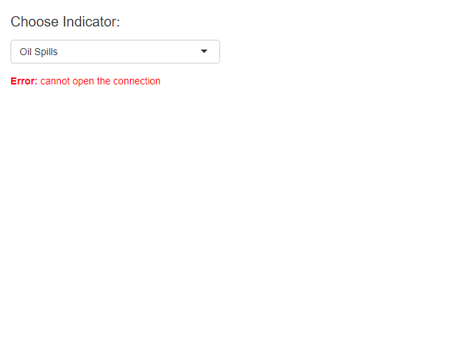

library(tidyverse)Warning: package 'tidyverse' was built under R version 4.2.3Warning: package 'ggplot2' was built under R version 4.2.3Warning: package 'tibble' was built under R version 4.2.3Warning: package 'tidyr' was built under R version 4.2.3Warning: package 'readr' was built under R version 4.2.3Warning: package 'purrr' was built under R version 4.2.3Warning: package 'dplyr' was built under R version 4.2.3Warning: package 'stringr' was built under R version 4.2.3Warning: package 'lubridate' was built under R version 4.2.3── Attaching core tidyverse packages ──────────────────────── tidyverse 2.0.0 ──
✔ dplyr 1.1.4 ✔ readr 2.1.5
✔ forcats 1.0.0 ✔ stringr 1.5.1
✔ ggplot2 3.5.1 ✔ tibble 3.2.1
✔ lubridate 1.9.3 ✔ tidyr 1.3.1
✔ purrr 1.0.2
── Conflicts ────────────────────────────────────────── tidyverse_conflicts() ──
✖ dplyr::filter() masks stats::filter()
✖ dplyr::lag() masks stats::lag()
ℹ Use the conflicted package (<http://conflicted.r-lib.org/>) to force all conflicts to become errorslibrary(plotly)Warning: package 'plotly' was built under R version 4.2.3
Attaching package: 'plotly'
The following object is masked from 'package:ggplot2':
last_plot
The following object is masked from 'package:stats':
filter
The following object is masked from 'package:graphics':
layoutlibrary(shiny)
ui <- fluidPage(
selectInput("data", label = h2("Choose Indicator:", style = "font-size:20px;"),
choices = c("Oil Spills",
"Nuisance Aquatic Vegetation",
"Red Drum",
"Blue Crab Catch",
"Brown Pelican",
"Oyster Catch",
"Percent Small Business",
"Vessels Fishing & Seafood Dealers")),
plotly::plotlyOutput("plot", width = "100%")
)
server <- function(input, output, session) {
#####FUNCTION#####
plot_fn_obj<-function(df_obj) {
if (ncol(df_obj$data)<5.5){
#single plot
plot_main<-ggplot(data=df_obj$data, aes(x=year, y=value))+
geom_ribbon(data=df_obj$pos, aes(group=1,ymax=max, ymin=df_obj$vals$mean),fill="#7FFF7F")+
geom_ribbon(data=df_obj$neg, aes(group=1,ymax=df_obj$vals$mean, ymin=min), fill="#FF7F7F")+
geom_rect(aes(xmin=min(df_obj$data$year),xmax=max(df_obj$data$year),ymin=df_obj$vals$mean-df_obj$vals$sd, ymax=df_obj$vals$mean+df_obj$vals$sd), fill="white")+
geom_hline(yintercept=df_obj$vals$mean, lty="dashed")+
geom_hline(yintercept=df_obj$vals$mean+df_obj$vals$sd)+
geom_hline(yintercept=df_obj$vals$mean-df_obj$vals$sd)+
geom_line(aes(group=1), lwd=1)+
labs(x="Year", y=df_obj$labs[2,2], title = df_obj$labs[1,2])+
theme_bw() + theme(title = element_text(size=14, face = "bold"))
if (max(df_obj$data$year)-min(df_obj$data$year)>20) {
plot_main<-plot_main+scale_x_continuous(breaks = seq(min(df_obj$data$year),max(df_obj$data$year),5))
} else {
plot_main<-plot_main+scale_x_continuous(breaks = seq(min(df_obj$data$year),max(df_obj$data$year),2))
}
plot_main
} else {
#facet plot
plot_sec<-ggplot(data=df_obj$data, aes(x=year, y=value))+
facet_wrap(~subnm, ncol=1, scales = "free_y")+
geom_ribbon(data=df_obj$pos, aes(group=subnm,ymax=max, ymin=mean),fill="#7FFF7F")+
geom_ribbon(data=df_obj$neg, aes(group=subnm,ymax=mean, ymin=min), fill="#FF7F7F")+
geom_rect(data=merge(df_obj$data,df_obj$vals), aes(xmin=allminyear,xmax=allmaxyear,ymin=mean-sd, ymax=mean+sd), fill="white")+
geom_hline(aes(yintercept=mean), lty="dashed",data=df_obj$vals)+
geom_hline(aes(yintercept=mean+sd),data=df_obj$vals)+
geom_hline(aes(yintercept=mean-sd),data=df_obj$vals)+
geom_line(aes(group=1), lwd=0.75)+
labs(x="Year", y=df_obj$labs[2,2], title = df_obj$labs[1,2])+
theme_bw()+theme(strip.background = element_blank(),
strip.text = element_text(face="bold"),
title = element_text(size=14, face = "bold"))
if (max(df_obj$data$year)-min(df_obj$data$year)>20) {
plot_sec<-plot_sec+scale_x_continuous(breaks = seq(min(df_obj$data$year),max(df_obj$data$year),5))
} else {
# plot_sec<-plot_sec+scale_x_continuous(breaks = seq(min(df_obj$data$year),max(df_obj$data$year),2))
}
plot_sec
}
}
#####Data Names#####
dat_shrt_nms<-data.frame(c(
oilsp="Oil Spills",
nav="Nuisance Aquatic Vegetation",
rdrum="Red Drum",
blcrab="Blue Crab Catch",
brpeli="Brown Pelican",
oystercat="Oyster Catch",
persmbusi="Percent Small Business",
vesfish="Vessels Fishing & Seafood Dealers"
))
dat_shrt_nms<-tibble::rownames_to_column(dat_shrt_nms)
colnames(dat_shrt_nms)<-c("short", "long")
#####Load Data Separately#####
get_data <- reactive({
shrt_nm<-dat_shrt_nms$short[dat_shrt_nms$long==input$data]
filename <- paste0("Data_Obj/Data_R/",shrt_nm, "_li.rds")
dat_df<-source(filename)
return(dat_df)
})
#####PLOT#####
output$plot<-renderPlotly({
df_pick <- get_data()
# plot_main<-plot_fn_obj(df_pick)
# plotly_gg<-ggplotly(plot_main)
# df_cond<-select(df_pick$data, -c("valence","min","max"))
# plotly_gg
plot_gg<-ggplot(df_pick$value$data, aes(year, value))+
geom_point()
ggplotly(plot_gg)
})
}
shinyApp(ui, server)PhantomJS not found. You can install it with webshot::install_phantomjs(). If it is installed, please make sure the phantomjs executable can be found via the PATH variable.
Listening on http://127.0.0.1:6851Warning in file(filename, "r", encoding = encoding): cannot open file
'Data_Obj/Data_R/oilsp_li.rds': No such file or directoryWarning: Error in file: cannot open the connection